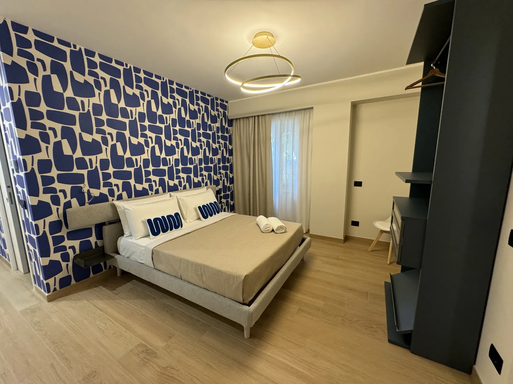

RECENSIONE VERIFICATABooking.com
«Appartamento nuovo e accogliente, molto pulito e in una posizione ideale per visitare Taormina. Un’ospitalità davvero cordiale.»
Sei appartamenti e un'accoglienza dal carattere mediterraneo. Scopri gli ambienti e scegli da dove iniziare il tuo soggiorno a Taormina.
Anteprima: il modulo mostra un riepilogo, senza consultare disponibilità né inviare prenotazioni.
Case Vacanza Tauro è presente sui principali portali di prenotazione internazionale. Scopri cosa raccontano i nostri ospiti.
«Appartamento nuovo e accogliente, molto pulito e in una posizione ideale per visitare Taormina. Un’ospitalità davvero cordiale.»
«Nel cuore di Taormina, comodo per raggiungere tutto e allo stesso tempo tranquillo grazie alle finestre insonorizzate.»
«La terrazza è un angolo speciale, l’appartamento è pulitissimo e la posizione permette di vivere pienamente il centro.»
«Una sistemazione completa di tutto, con un piacevole benvenuto e ambienti ben insonorizzati anche in una zona vivace.»
Sei appartamenti ispirati ai nomi delle isole, con ambienti diversi da scoprire. Un invito a vivere Taormina con la libertà di scegliere il soggiorno che fa per te.
Colori, ambienti e dettagli raccontati attraverso le fotografie.
Esplora gli interni e scegli il tuo appartamento preferito.
Lasciati ispirare dai luoghi e dalle atmosfere della città.
Una selezione di fotografie degli ambienti Tauro. Sfoglia le immagini, osserva i dettagli e lasciati ispirare dagli spazi.
Esplora gli appartamenti →Sei nomi, sei percorsi da esplorare. Apri una scheda per conoscere meglio gli ambienti e le informazioni disponibili.
Colori mediterranei, spazi curati e la libertà di un soggiorno tutto tuo.
Esplora Filicudi →Linee moderne e dettagli vivaci: un rifugio di stile nel cuore di Taormina.
Esplora Salina →
03 / 06Atmosfere blu e dettagli di design per una vacanza dal carattere unico.
Esplora Vulcano →Una vasca idromassaggio scenografica per trasformare il relax in un rituale.
Scopri l'appartamento → 05 / 06
05 / 06Blu intenso, geometrie originali e spazi da vivere in piena libertà.
Scopri l'appartamento → 06 / 06
06 / 06Nata nel 2024, un’accoglienza moderna e raffinata nel cuore di Taormina.
Conosci di più →Hai domande o vuoi ricevere maggiori informazioni sul tuo soggiorno?
Contattaci →Questa è un'anteprima: i dati non sono stati inviati e la disponibilità non è stata verificata.